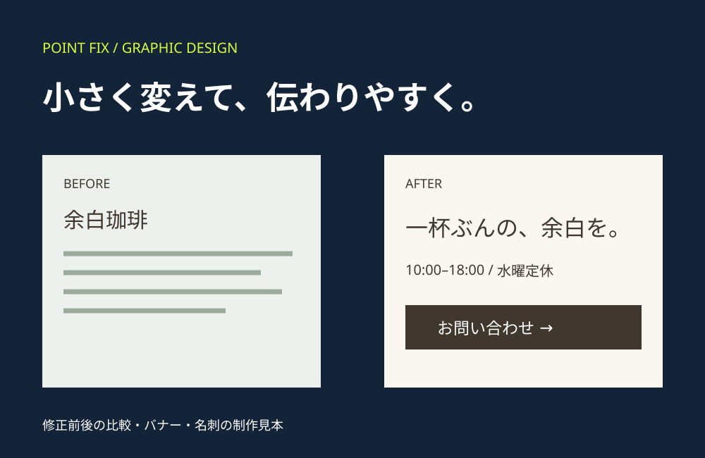

想定する困りごと
営業時間、料金、問い合わせ先が一つの文章に混ざり、情報を見つけにくい。
制作例の解説 / DESIGN NOTES
必要なところを直して、探したい情報へ進みやすく。

営業時間、料金、問い合わせ先が一つの文章に混ざり、情報を見つけにくい。
同じ店舗情報を使い、文字の大きさ、情報の区切り、連絡先の見せ方を比較できます。
サイトの修正とは別に、告知バナーとショップカードの見本も掲載しています。色や文字を揃える考え方をご覧いただけます。
部分修正・デザイン制作は8,800円〜（税込）。修正範囲、サイズ、点数、納品形式ごとに見積もります。サンプルに載る修正・バナー・名刺がすべて含まれるセット料金ではありません。
既存サイトは編集権限とデータを確認して対応可否を判断します。印刷代・配送費・撮影費は含みません。
この解説は架空の自主制作の設計意図です。実案件の成果・アクセス増加・売上改善を示すものではありません。